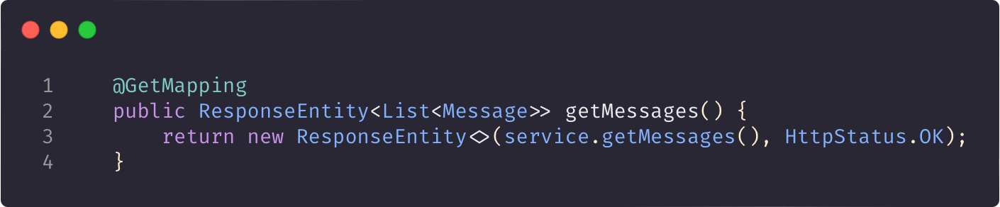

Sidens opbygning
Denne side består af et simpelt HTML-dokument, som linker til et css stylesheet.
HTML-dokumentet består af simple elementer med semantiske tags, såsom header (<h1>)
og paragraph (<p>). Denne tekst befinder sig i HTML-dokumentets <body>,
som generelt indeholder størstedelen af sidens indhold.
Her ses HTML-koden for en simpel body:
Endpoints
Denne side har en række endpoints som kan bruges til at se et eksempel på eksponering
af data gennem http requests, hvilket både kan bruges til at udvikle dynamiske web-applikationer
og APIs. På denne URL kan du tilgå bagomliggende dummy data i form
af en række beskeder der bliver sendt tilbage til browseren i JSON format gennem en HTTP-respons
